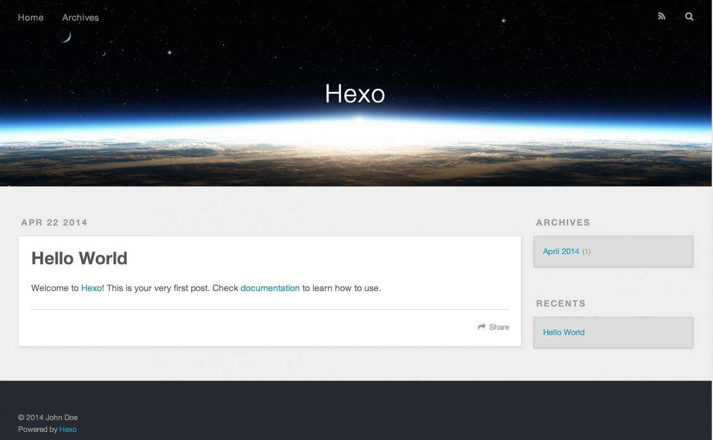
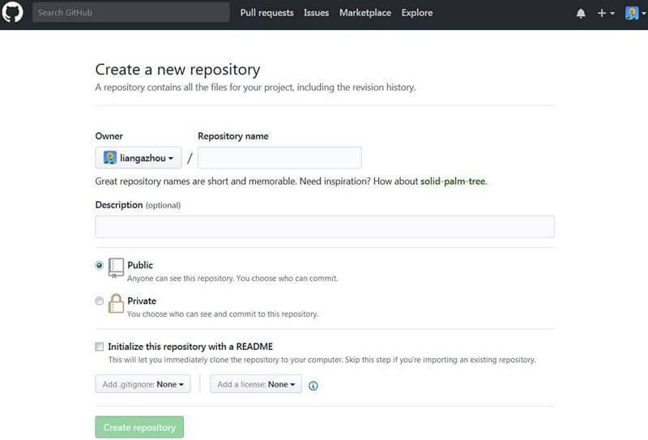

适合对象
如果你符合以下情况，那么恭喜你，此文就是为你而写的：
- 想拥有属于自己的独立博客
- 仅仅了解建站技术
- 暂时不想花钱购买网站空间和域名
- 希望专注于写作本身
- 网站风格简洁、美观
接下来就跟着我一步一步搭建属于自己的个人博客吧
关键是既漂亮，又免费，绝对的赚到了有没有：-）
实施步骤
1.关于Hexo
开始安装Hexo，先简单介绍一下Hexo是什么：
Hexo是一个台湾学生开发的基于Node.js的博客系统，可自动生成基于github pages的页面并部署
其写作方式是基于Markdown格式，语法简单，页面简洁美观，代码轻量级
总结一下其特点就是：
- 代码是基于Node.js搭建的，架构清晰，很适合前端工程师使用
- 因为第一点原因，所以Hexo开源免费模板很多（参考Hexo官网主题和知乎：有哪些好看的Hexo主题？）
- 适合搭技术总结/工作分享/个人随笔型博客
- 用Mardown格式来撰写文档并发布，格式清晰，更专注于文章本身
- 可以方便的在github上同步博客内容，实现多终端访问和写作
- 适合Mac、Windows、Linux等各种平台
安装Hexo前需要安装的是：
- Node.js
- Git
正式部署前先在本地电脑上参考官网安装步骤安装
安装完后运行本地化部署命令（默认端口号是4000，注意是否已被占用）1
hexo s -g
打开浏览器页面http://localhost:4000，看到Hello World页面就表示成功了！！

2.创建github工程
首先在github上注册你的新用户账号(已有的话，跳过)
再创建一个新的工程Project，名为yourname.github.io(注意yourname替换为你的用户账号)

申请成功后，你的博客的github地址类似如下：
https://github.com/liangazhou/liangazhou.github.io.git
git://git@github.com/liangazhou/liangazhou.github.io.git
这里我们实际上是利用了github的github pages功能来建立属于github项目的页面
当然既然官方的解释是“share your and your project info”，那自然也可以用来建立博客
3.部署网站
- 在git仓库上创建两个分支：master 与 hexo
- 设置hexo为默认分支（因为我们只需要手动管理这个分支上的Hexo网站文件)
将仓库代码下载到本地
1
git clone https://github.com/liangazhou/liangazhou.github.io.git
在本地文件夹下通过Git bash依次执行以下命令
1
2
3
4npm install hexo
hexo init
npm install
npm install hexo-deployer-git
如果hexo init 报错，说不是一个空目录
解决方案：另外起一个目录，运行hexo init，再把生成的文件都拷贝到该目录下
修改_config.yml中的deploy参数，分支应为master
1
2
3
4deploy:
type: git
repo: https://github.com/liangazhou/liangazhou.github.io.git
branch: master提交网站相关的文件
1
2
3git add .
git commit -m "Comments"
git push origin hexo生成网站静态页面并部署到GitHub Pages上
1
hexo g -d
打开浏览器页面http://liangazhou.github.com，看到Hello World页面就表示远端部署成功了！
4.更改themes主题
官网的默认主题模板是landscape，如果对主题模板有其他追求的话，可以换成其他模板
笔者使用的模板来自于litten，是一款比较简洁的模板，喜欢的话可以下载，下载后直接放到themes目录下即可（模板的配置参考作者的文档即可）
5.发表第一篇博文
在source目录是所有的博文，如article1.md，你可以直接在目录下新建文档，或者使用命令创建1
hexo new POSTNAME
使用Markdown编辑器（笔者使用的是Sublime Text 3）配合好用的插件实现（livereload）
Markdown的语法参考：https://www.w3cschool.cn/markdownyfsm/
编辑完毕后在本地预览无问题后，可以通过以下命令部署到网络1
hexo g -d
常见问题
1. 如何上传图片
TBD
2. 如何所见即所得的编辑和预览博文
TBD